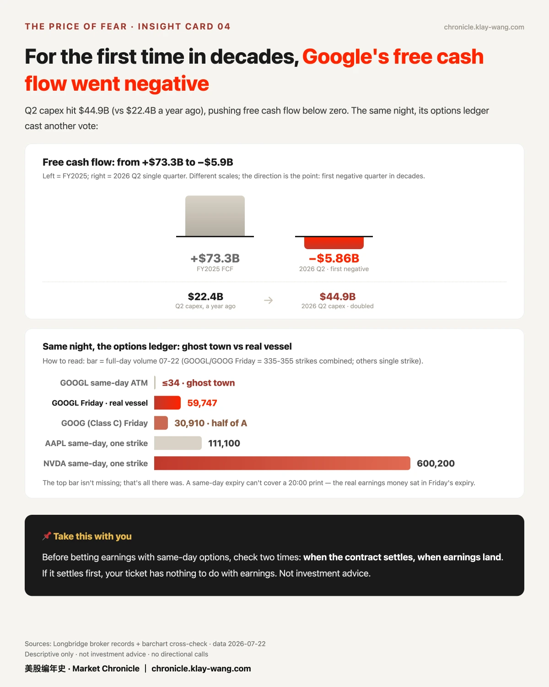
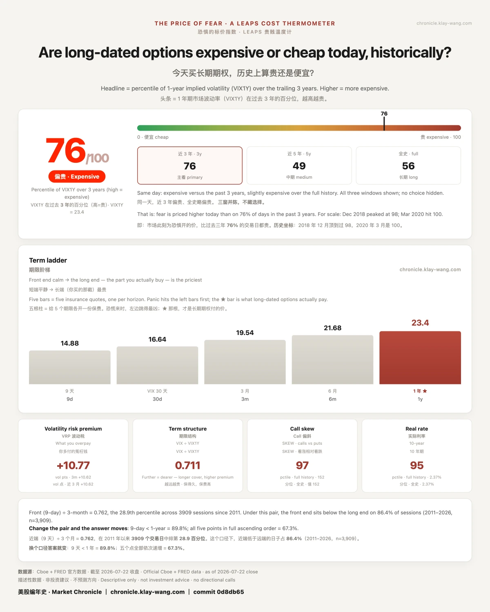

Google CFO 还没念出数字，存储股的期权已经把剧本演完了· 07-23
先对账。昨天收盘前市场给两份财报的定价：GOOGL ±5.2%、TSLA ±5.0%。开奖：GOOGL 动 2.1% 兑现四成，TSLA 动 3.7% 兑现四分之三，都没冲出围栏。
座次我们押反了，记分牌记下。买单的是数字，消化的是账单。
EM 兑现率序列：第 1 期。
节目一：谷歌把 150 亿加进了别人的股价
周三盘后谷歌财报，所有人盯着云业务加速 82% 和营收超预期。我盯的是另一个数：全年资本开支指引上调 150 亿美元，加到 1950 亿到 2050 亿。
这笔钱要买算力，算力要吃存储。而存储股，三天前就开始涨了。
美光周一 +1.9%，周二 +12.1%；闪迪周二 +14.3%。CFO 昨晚才念出那个数字，存储股的期权已经把剧本演完了。台账里还记着另一面：美光大涨次日，近月保护单立刻进场（8 月 890/905 看跌），本周 put 仓位全组最高。我的判断：资金沿着 AI 资本开支的供应链提前定价，涨的和买保险的是同一拨聪明钱。置信度：倾向于。

账单有多大？昨晚两家的自由现金流一起转负：谷歌 −58.55 亿美元，数十年来首次单季转负（Q2 资本开支 449 亿，去年同期只有 224 亿）；特斯拉 −10.9 亿，两年来首次。同一晚双双转负，不是巧合。
更讽刺的是时间差：美银 7 月中的报告说四大云商里三家年底前耗尽自由现金流，Alphabet 是唯一的例外。几天后，这份财报就把例外划掉了。（数字汇总自财报与美银报告）
这场迁徙的两端，一端在哭，一端在笑。七巨头 6 月市值缩水 2.2 万亿美元；同期存储三巨头股价平均涨了 639%，三星单季利润超过了英伟达。钱从云商的股东口袋，流进了供应商的利润表。我们三天前记录的存储股期权剧本，就是这场迁徙的期权切面。分水岭在昨晚划下：在它之前，市场问的是 AI 能带来多大增长；在它之后，问题变成了增长的代价谁付。
但这里有一个所有头版都没看的数。今晨的头条都在写分水岭之夜，我们的台账里躺着另一个读数：谷歌 2027 年 9 月的长期期权 IV，财报前 36.78，财报后 36.5，连续第二天纹丝不动。新闻的字号和期权的价格，昨晚背离到极致：头条说分水岭，长端说无事发生。
要么期权市场早就把这一切定价了（capex 上调是年内第二次，310 亿美元发债早已公告），要么它错了。
我们不裁决，把这个背离立案：10 月下次财报开奖，回头看是头条对了，还是长端对了。别人报道新闻，我们给新闻标价。
昨晚还有几点值得关注：有人买了上万张 310 线的看跌（GOOGL 9 月 + GOOG 8 月姊妹单），花钱问的是 AI 叙事跌一成怕不怕；那个五腿各 11.2k 张的 10 月 call 程序，问的是财报季收官前巨头还有没有一轮；QQQ 两天铺了十六层明年 1 月的保护带，问的是明年 1 月的世界还认不认识现在的价格。

还有一件有意思的：谷歌A 当天到期的期权全天成交个位数（0、1、2、34 张），同一天苹果的当日到期 11.1 万张、英伟达 60 万张。盘中立案了一个假说：GOOG/GOOGL 双代码分走了流动性？当晚开奖：证伪。
GOOG 周五档只有 3.1 万张，是 A 类（6.0 万张）的一半，主战场一直在 GOOGL。真相更简单：当日合约 16:00 结算、财报 20:00 才公布，罩不住就没人买；真赌财报的钱全在周五那张券里（IV 86-91%）。立案、开奖、划掉，记分牌第一次用上了划掉这个动作。
节目二：特斯拉，财报是过程，不是事件
交付 480126 辆创纪录（+25%），营业利润率却只剩 1.4%，自由现金流 2024 年初以来首次转负。数字在撕裂，但期权账本给了一个更冷静的读法。
昨晨持仓确认：有人带着 8 月末的四片翼进了财报夜（310/315 看跌+420/435 看涨，离现价各 12% 到 15%）。他们赌的不是那一晚，是八月的轨迹。终版 −3.7%，离两侧翅膀都远。

同一晚，2027 年 1 月低 75% 的深虚看跌和 2028 年的远期看涨同时热卖。彩票和保险同时畅销的公司：深尾 put 买家用钱问的那个问题（烧钱的速度会不会赢过 robotaxi 到来的速度），FCF 转负让它昨晚有了实体。
再给一个台账才有的对照：营业利润率只剩 1.4%，但特斯拉一年期长端 IV 是49，全组第二贵；同组最稳的苹果只有 28.9。
怎么理解？
市场早就不按车企给它定价了。财报答的是车的问题，期权买的是 AI 的票，所以利润率崩了、股价只跌3.7%：买它期权的人，要的从来不是利润，是剧情。1.4% 和 49 放在一起，就是故事股三个字的定价证明。

温度计：76/100。财报夜过了，9 天期的怕塌到 14.88，一年期的价签 23.4 纹丝不动。
事件走了，但长期的怕没走。
═══════════════════════════════════════
🌍 English edition
═══════════════════════════════════════
Scoreboard first. Before Wednesday's close, the market's pricing for both prints: GOOGL ±5.2%, TSLA ±5.0%. The draw: GOOGL moved 2.1% — four-tenths used. TSLA moved 3.7% — three quarters used. Neither broke the fence.
We called the seating wrong; on the board it goes. The numbers got bought; the bill got digested.
Implied-move scorecard: entry #1.
Program One: Google just added $15B to someone else's stock price
Google reported Wednesday after the close. Everyone watched cloud accelerate 82% and revenue beat. I watched another number: the full-year capex guide raised $15B, to $195-205B.
That money buys compute; compute eats memory. And memory stocks started rallying three days earlier.
Micron +1.9% Monday, +12.1% Tuesday; SanDisk +14.3% Tuesday. The CFO hadn't read the number yet; the options market had already acted out the script. The ledger recorded the other side too: the day after MU's surge, near-month protection came in (Aug 890/905 puts), the group's heaviest put positioning. My read: money is pricing ahead along the AI capex supply chain — the rally buyers and the insurance buyers are the same crowd. Confidence: leans.
How big is the bill? Both companies' free cash flow went negative the same night: Google at −$5.86B, its first negative quarter in decades (Q2 capex $44.9B vs $22.4B a year ago); Tesla at −$1.1B, first since early 2024. Same night, both negative. Not a coincidence.
The irony is in the timing: a mid-July BofA note said three of the four hyperscalers would burn through free cash flow by year-end, with Alphabet the lone exception. Days later, this report crossed out the exception. (Figures compiled from filings and the BofA note.)
Both ends of the migration were visible. The Magnificent Seven shed $2.2 trillion of market cap in June; over the same stretch the three memory makers' shares are up an average of 639%, and Samsung's quarterly profit passed Nvidia's. Money is flowing from cloud shareholders' pockets into suppliers' income statements. The memory-options script we recorded three days ago is the options cross-section of that migration. The line was drawn Wednesday night: before it, the market asked how much growth AI could deliver. After it, the question is who pays for the growth.
But here is the number none of the front pages looked at. This morning's headlines all say watershed night; our ledger holds another reading: Google's Sep-2027 long-dated IV printed 36.78 before earnings, 36.5 after — flat for a second straight day. The headline font and the option price diverged to an extreme: the front page says watershed, the long end says nothing happened.
Either the options market priced all of this long ago (the capex raise was the second this year; the $31B bond sale was old news), or it is wrong. We don't arbitrate. We open a case: October's earnings is the draw — we'll come back and see whether the headlines were right, or the long end was. Someone reports the news; we price it.
A few more prints worth noting from last night: someone bought over ten thousand puts on the 310 line (GOOGL September + a GOOG August sister trade) — paying to ask, what if the AI story drops ten percent; that five-leg program of 11.2k October calls each — asking whether the megacaps have one more leg before earnings season closes; and QQQ laid down sixteen layers of next-January protection in two days — asking whether next January's world will still recognize today's prices.
One more curious one: Google's Class A same-day options traded in single digits all day (0, 1, 2, 34 contracts), while Apple's same-day did 111k and Nvidia's 600k. Intraday we opened a case: is the GOOG/GOOGL dual listing splitting the flow? Same-night check: struck out.
GOOG's Friday strikes did 31k — half of the A shares' 60k. The main table was always GOOGL. The simpler truth: same-day contracts settle at 16:00 and earnings land at 20:00; a ticket that can't cover the print attracts no buyers. The real earnings money sat in Friday's expiry (IV 86-91%). Opened, checked, struck out — the scoreboard's strike-through got its first real use.
Program Two: Tesla — earnings are a process, not an event
Record deliveries of 480,126 (+25%), operating margin down to 1.4%, first negative free cash flow since early 2024. The numbers are split. The options ledger reads calmer.
Open interest confirmed it yesterday morning: someone walked into earnings night carrying four late-August wings (310/315 puts + 420/435 calls, each 12-15% from spot). They bet the path of August, not one night. Final print: −3.7%, far from both wings.
The same night, Jan-2027 deep puts (75% below spot) and 2028 far-dated calls sold side by side. A company where lottery tickets and insurance sell out together: the deep-put buyers' question — does the burn rate outrun robotaxi's arrival — got a physical form last night in that negative free cash flow.
One more pairing only a ledger can give: operating margin at 1.4%, but Tesla's one-year long-dated IV is 49, second dearest in the group; Apple, the steadiest name in the set, sits at 28.9.
How to read that?
The market stopped pricing it as a car company long ago. Earnings answer car questions; the options buy the AI ticket. That's why margins collapsed and the stock fell only 3.7%: the people buying its options never wanted the profit — they wanted the plot. Put 1.4% and 49 side by side, and you have the price tag of the word "story stock."
Thermometer: 76/100. The event has passed — nine-day fear collapsed to 14.88, and the one-year price tag sits at 23.4, unmoved.
The event left, but，the long fear stayed.
本站不提供投资建议，不预测方向，不做择时。